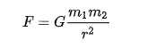
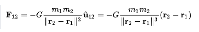

¿Que es?
La ley de gravitación universal es una ley física clásica que describe la fuerza o interacción gravitatoria entre distintos cuerpos con masa, fue formulada por Isaac Newton en su libro Philosophiae Naturalis Principia Mathematica, publicado el 5 de julio de 1687, donde establece por primera vez una relación proporcional (deducida empíricamente de la observación) de la fuerza con que se atraen dos objetos con masa. Así, Newton dedujo que la fuerza con que se atraen dos cuerpos tenía que ser proporcional al producto de sus masas dividido por la distancia entre ellos al cuadrado. Para grandes distancias de separación entre cuerpos se observa que dicha fuerza actúa de manera muy aproximada como si toda la masa de cada uno de los cuerpos estuviese concentrada únicamente en su centro de gravedad, es decir, es como si dichos objetos fuesen únicamente un punto, lo cual permite reducir enormemente la complejidad de las interacciones entre cuerpos complejos.
Así, con todo esto resulta que la ley de la gravitación universal predice que la fuerza ejercida entre dos cuerpos de masas , r es igual al producto de sus masas e inversamente proporcional al cuadrado de la distancia, es decir:
 
Forma vectorial
Aunque en la ecuación (1) se ha detallado la dependencia del valor de la fuerza gravitatoria para dos cuerpos cualesquiera, existe una forma más general con la que poder describir completamente dicha fuerza, ya que en lugar de darnos únicamente su valor, también podemos encontrar directamente su dirección. Para ello, se convierte dicha ecuación en forma vectorial, para lo cual únicamente hay que tener en cuenta las posiciones donde se localizan ambos cuerpos, referenciados a un sistema de referencia cualquiera. De esta forma, suponiendo que ambos cuerpos se encuentran en las posiciones vendrá dada por la siguiente ecuación

¿Para qué los utilizamos?
La fuerza de gravedad puede estudiar en los siguientes ejemplos: La caída libre de un cuerpo en la superficie terrestre. La masa del planeta nos atrae a ella y actúa sobre nuestra masa imprimiendo una aceleración. Por eso, un objeto que cae durante un minuto impacta más fuerte que uno que lo hace durante un segundo.


Calculador de Fuerza de atraccion
para calcular la fuerza de atraccion entre sol y la tierra escriba ---> "1"
para calcular la fuerza de atraccion entre la luna y la tierra escriba ---> "2"
para determina cuántas veces la fuerza de atracción entre el sol y la tierra es mayor que la fuerza de atracción entre la tierra y la luna escriba ---> "3"
Sol y Tierra : |
|
Luna y Tierra : |
|
Diferencia : |
la fuerza de atraccion de la tierra con el sol es 179.4137618163665 veces mayor al de la tierra y la luna